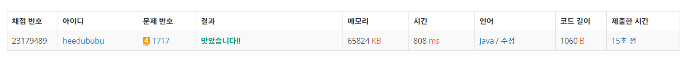

👀 문제
https://www.acmicpc.net/problem/1717
👊 도전
1. 설계
- Union-Find 문제이다.
2. 구현 (성공 코드)
1
2
3
4
5
6
7
8
9
10
11
12
13
14
15
16
17
18
19
20
21
22
23
24
25
26
27
28
29
30
31
32
33
34
35
36
37
38
39
40
41
42
43
44
45
46
47
48
49
50
51
52
53
54
55
56
57
58
59
import java.util.*;
import java.io.*;
/**
* @author HEESOO
*
*/
class Main {
static StringBuilder sb;
static int[] parent;
public static void main(String[] args) throws IOException {
BufferedReader br=new BufferedReader(new InputStreamReader(System.in));
String[] input=br.readLine().split(" ");
int n=Integer.parseInt(input[0]);
int m=Integer.parseInt(input[1]);
sb=new StringBuilder();
parent=new int[n+1]; // i의 최상 부모 저장
for(int i=1;i<=n;i++) parent[i]=i; // 배열 초기화
for(int i=0;i<m;i++) {
String[] s=br.readLine().split(" ");
int a=Integer.parseInt(s[1]);
int b=Integer.parseInt(s[2]);
if(s[0].equals("0")) union(a, b);
else check(a, b);
}
System.out.println(sb.toString());
}
public static void union(int a, int b) {
// if(a>b) { // a<b이도록 설정
// int temp=a;
// a=b;
// b=temp;
// }
// 최상 부모 찾기
a=find(a);
b=find(b);
// 부모가 다르다면 b의 부모로 a설정하여 둘이 합집합 만들기
if(a!=b) parent[b]=a;
}
public static int find(int x) {
if(parent[x]==x) return x; // 부모가 없을 때
// x의 최상위 부모 저장 및 리턴
else return parent[x]=find(parent[x]);
}
public static void check(int a, int b) {
a=find(a);
b=find(b);
// 최상위 부모가 같아야 둘은 합집합임
sb.append(a==b? "YES\n":"NO\n");
}
}
3. 결과
 🤟 성공 🤟
4. 설명
- Union-Find으로 문제를 해결한다
- parent[]는 i의 부모를 저장한다.
- 처음에는 부모가 없으므로 자기자신으로 배열을 초기화한다.
- Union
- a와 b를 합집합으로 만든다.
- 부모가 자식보다 작아야 한다던가의 크기 조건이 없기 때문에 a와 b의 대소 비교는 필요없다(있어도 문제 푸는데 지장은 없다).
- find()로 a, b의 부모를 찾는다. 둘의 부모가 같다면 이미 합집합이므로 따로 코드를 수행하지 않아도 된다.
- 부모가 다르다면, b의 부모로 a를 설정한다(a의 부모로 b를 설정해도 상관없다).
- Find
- x의 부모를 찾는다.
- parent[x]==x라면 더이상 x의 부모가 없는 것이므로 x를 리턴한다.
- 부모가 더 있다면 재귀 호출을 통해 그곳으로 이동한다.
- 재귀를 통해 타고타고 최상위 부모까지 갔다가 최상위 부모 값을 가지고 다시 복귀하면, parent[x]에 최상위 부모를 저장한다. 이를 통해 이후 다시 x의 부모를 찾을 때, 똑같이 부모를 타고 올라가는 중복을 방지한다.
👏 해결 완료!
참고
- [알고리즘] 유니온 파인드 (Union-Find) https://brenden.tistory.com/33